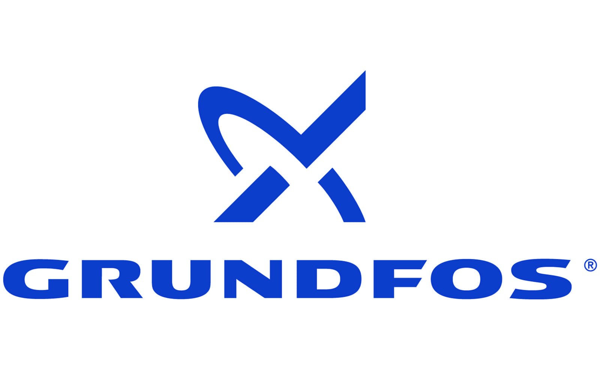

I'm an Industrial Engineering graduate passionate about process improvement, operational efficiency, and data-driven problem-solving. My background includes workflow optimization, quality improvement, sustainability analytics, and engineering design — developing practical solutions that improve productivity and support smarter decision-making.
I'm Rahul Ashok Jeyalakshmi, an Industrial Engineering graduate with experience in sustainability analytics, mechanical systems, and data-driven problem solving.
My projects include analyzing green supply chains, improving retail store layouts, and exploring fleet sustainability and emissions reduction. Parallel to this, I'm building my skills in front-end development — focusing on clear layouts, responsive design, and user-friendly interactions.
Career
Experiences
Feb 2026 – Present
Technical Writer
Authored and published technical articles translating CAD/3D design projects into clear, reader-friendly explanations for engineering and product-design audiences.
Produced original content with strong organization to improve readability and knowledge transfer.
Showcased ability to communicate both product branding/visual design and engineering functionality through detailed case-style articles.
Created engineering-focused writeups covering design requirements, modeling workflow, component breakdown, and final visualization.
Identified that 80% of urban freight originates or ends in metropolitan areas, emphasizing the need for emission-focused strategies.
Conducted break-even analysis on electric truck implementation, providing insights into financial feasibility.
Evaluated barriers and enablers for electric vehicle (EV) adoption in Turkey's urban freight sector, emphasizing stakeholder collaboration for decarbonization.
Assessed logistics influencer's impact on vehicle procurement policies,pushing the adoption of low-emission vehicle fleets.
Sustainability · Green Supply Chain · Logistics · Operations Research
Jan 2024 – May 2024
Graduate Trainee — University at Buffalo
Assisted in developing industrial hygiene programs focused on hazard identification, exposure assessment, and risk mitigation.
Analyzed data from industrial hygiene surveys and helped prepare compliance reports for internal and external audits.
Supported safety training modules and standard operating procedures to promote health awareness.
Participated in root cause analysis of workplace incidents and recommended preventive actions.
Industrial Hygiene · OSHA · Safety · Training
Jun 2022 – Mar 2023
Industrial Service Engineer — MABS Associates (Grundfos)

Conducted on-site installations, maintenance, and repairs of industrial pumps and motors, reducing time by 10%.
Collaborated with a team to optimize maintenance process, cutting repair time by 30% and saving up to ₹1,50,000.
Improved first-time fix performance by 20% using RCA to identify common fault patterns.
Achieved 25% reduction in equipment downtime through root cause analysis and optimized pump maintenance.
Maintenance · RCA · Cost Saving · Troubleshooting
Dec 2021
Mechanical Engineering Intern — NLC Power India Limited
Conducted quality inspections on forged components, contributing to a 13% reduction in production waste.
Improved production efficiency by 15% by implementing recommendations based on the companies previous year data, leading to more streamlined operations.
Compiled and analyzed production data to identify trends and opportunities for process improvement, supporting data-driven decision-making.
Collaborated with cross-functional teams to monitor production schedules and coordinate timely deliveries.
Inspection · Data Analysis · Scheduling · Efficiency
Aug – Sep 2021
Production Engineering Intern — Harihar Alloys Private Limited
Conducted quality inspections on forged components, contributing to a 13% reduction in production waste.
Improved production efficiency by 15% through data-driven recommendations.
Compiled and analyzed production data to identify trends and process improvement opportunities.
Inspection · Efficiency · Operations · Scheduling
Jun 2020 – Feb 2021
Supply Chain Coordinator Assistant — Shree Vari Fly Ash Bricks
Built Power BI Dashboards to track procurement KPIs, reducing manual reporting effort by 35%.
Assisted in developing a streamlined logistics strategy, reducing transportation costs by 10%.
Processed an average of 150 purchase orders per month, reducing lead times by 20%.
Performed cost-benefit analyses resulting in a 5% ($20,000) reduction in procurement costs.
DOE, SPC, Gage R&R, Process Capability (Cp/Cpk), Regression, Hypothesis Testing, Root Cause Analysis (RCA), Continuous Improvement
Communication
Technical Writing, Documentation, Presentations, Written Communication, Daily Reports, Stakeholder Collaboration, Problem Solving
Work Portfolio
Projects
3D Design
Hand Gripper Design
University at Buffalo inspired robotic gripper designed with precision, featuring linked arms, pivot-based motion, and a balanced gripping structure demonstrating movement, stability, and structural coordination.
Modeling · 3D Design · Pivot-Based Motion · Structural Balance
Mechanical
Radial Engine Mechanism & Motion Simulation
Designed and modeled a radial engine mechanism demonstrating coordinated motion of multiple pistons connected to a central crank system, exploring rotary-to-reciprocating motion conversion.
3D CAD · Motion Study · Engine Assembly · Kinematics
Vehicle
Go Kart Chassis Design
Go-kart chassis frame designed with precision to ensure structural integrity, stability, and driver safety, reflecting strong skills in CAD modeling and mechanical design.
3D Design · Structural Integrity · Mechanical Design
CAD
Golf Ball CAD Design
3D CAD model of a golf ball with detailed surface dimples reflecting aerodynamic characteristics, highlighting precision in pattern creation and surface detailing.
3D CAD · Surface Detailing · Pattern Design · Visualization
Design
Flower Vase Design
Flower vase model demonstrating creative product design with smooth curves, symmetric patterns, and precise surface detailing — balancing engineering tools with aesthetic visualization.
Detailed 3D representation of a 9V battery with accurate proportions, realistic surface details, and custom logo branding. Highlights CAD modeling, product visualization, and digital prototyping skills.
Accuracy · Visualization · Branding
Consumer
iPhone 3D CAD Design
3D CAD model of an iPhone with attention to every detail — dual-lens camera module, sleek back panel, front display, and button placements. Enhanced surface modeling accuracy and assembly design workflow.
Detailing · Surface Modeling · Ergonomics
Mechanical
Scissors Assembly
3D CAD model of a functional scissor assembly with ergonomic grips and precision-aligned blades, incorporating realistic motion simulation to replicate the pivoting mechanism.
Assembly · Ergonomics · Precision · Prototyping
Robotics
Robotic Arm Assembly
Functional robotic arm assembly designed at UB incorporating rotational joints and a gripping end effector. Serves as a prototype for educational demonstrations in mechatronics and automation.
Robotics · Kinematics · Assembly · Automation
Engine
V6 Engine Design
Detailed 3D CAD model of a V6 internal combustion engine with coordinated piston, crankshaft, and connecting rod motion, exploring engine dynamics, tolerancing, and motion simulation.
Developed and simulated a Quick Return Mechanism demonstrating efficiency in converting rotary motion into reciprocating motion with reduced return stroke time.
CAD · Simulation · Kinematics · Motion Study
Statistics
Design of Experiments (DOE) & Optimization
Applied fractional factorial design (Resolution V) to analyze effects of five factors on flight time of paper helicopters. Identified paper type as only significant factor; achieved 12% improvement via RSM.
DOE · Factorial Design · Regression · Minitab
Analytics
Automotive Market Trends Through Data Analytics
Used data analytics to uncover automotive market trends, identifying emerging patterns, improving operational performance, and delivering clear data-driven insights for business growth.
Data Analytics · Market Trends · Business Intelligence
Aerospace
Design and Optimization of High-Efficiency Axial Turbines
Designed and analyzed an axial turbine wheel — an essential part of aerospace and power generation engines — focused on high-efficiency performance under difficult operating conditions.
CAD · Machining · Modeling · Visualization
Marine
5-Blade Boat Propeller Design
Designed and optimized a 5-blade boat propeller using advanced CAD modeling to enhance hydrodynamic efficiency and reduce cavitation, focusing on optimal blade geometry for improved thrust.
Designed and created a high-performance roller bearing for demanding applications in industrial machinery, automotive, and aircraft — with exceptional performance, robustness, and dependability.
Manufacturing · Modelling · Fitting · Design
Tool
Allen Wrench
Geometric accuracy and functional design of an Allen wrench (hex key) captured in 3D CAD, highlighting precision modeling and GD&T application.
Tool Design · Modeling · GD&T
Statistics
Process Control and Capability Analysis
Collaborated on a comprehensive project to analyze process control and capability of paper helicopter flight times using Xbar-R charts and statistical tools in Minitab.
SPC · Xbar-R Charts · Process Capability · Minitab
Facilities
Retail Store Optimization — A-Score Efficiency
Designed initial and proposed layouts for a retail store to improve efficiency from 61% to 81%, reducing space between products and time to increase productivity and profitability.
Single Slope Solar Still — Nano Phase Change Material
Designed and implemented a system to convert saline water into pure drinking water using paraffin wax mixed with Zinc Oxide (ZnO) as a phase change material.
Desalination · Solar Still · Phase Change Material
EHS
Industrial Hygiene Program — OSHA Compliance
Conducted industrial hygiene survey at a welding facility, evaluating exposure to manganese, chromium, and UV radiation. Proposed enhanced ventilation, PPE upgrades, and ergonomic workstation adjustments.
Industrial Hygiene · OSHA · Ergonomics · Safety
ATV
High-Performance All-Terrain Vehicle (ATV)
Innovative design and development of a high-performance ATV following a comprehensive project management framework covering scope definition, timeline management, risk assessment, and quality assurance.
Chassis Design · Project Charter · Quality · Risk Assessment
Keychain
Compact Utility Multipurpose Keychain
Designed in the form of a motorcycle to minimize weight while accommodating multiple essential tools — combining functionality, durability, and portability in a compact design.
Performance Study of a Single Slope Solar Still Using Nano Disbanded Phase Change Material
Published research on converting saline water into pure drinking water using paraffin wax mixed with Zinc Oxide (ZnO) as a nano-enhanced phase change material to improve solar still efficiency.
Solar Energy · Desalination · Phase Change Material · Sustainability
E-Business
Environmental & Social Impact of Sustainable E-Business Practices
Analysis of sustainable practices in e-business operations addressing carbon footprint reduction, resource efficiency, social equity, and sustainable growth in the digital economy.
Sustainability · Digital Business · Carbon Footprint · Environmental Impact